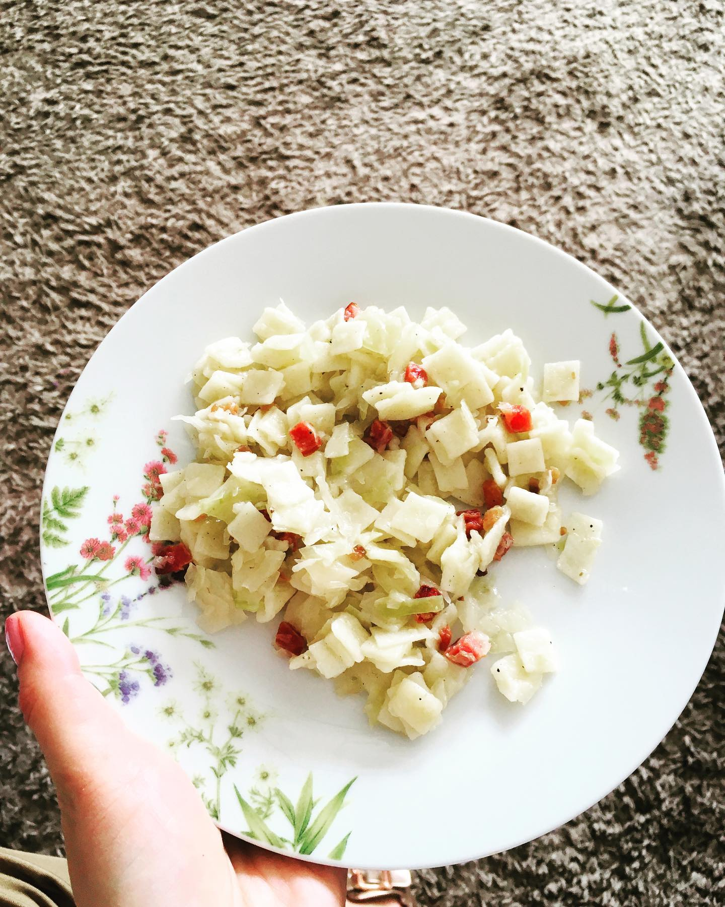

Kapustové fliačky podľa @zuzkaheckova — Normy Jedál
Aj vy máte nejake jedlo,ktoré ste nemali radi a potom po case ste zmenili názor?!🤷♀️ u mna to do dnes tak bolo s #kapustovefliacky. Neznasala som ich od základnej školy..lebo boli na sladko. Hold po vyše 20rokoch som zistila že sa daju robiť aj #inak #naslano a veru takto mi veľmi chutili. Dakujem @ka.gschwandtner za vyskúšanie a prehodnotenie #nazoru zaslúžia si ho😂 #fliackynaslano 😋#dobruchut